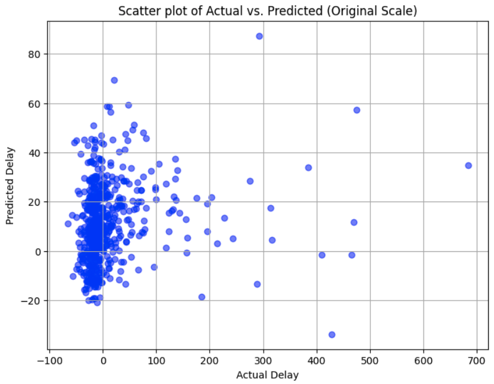
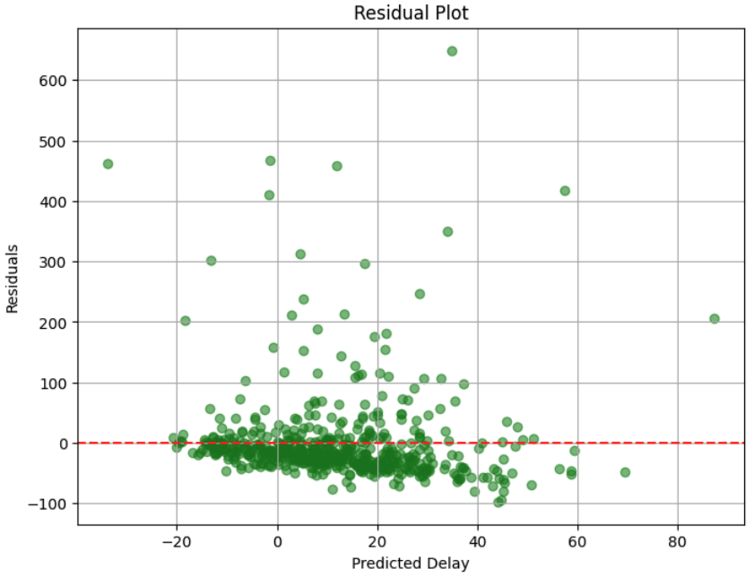
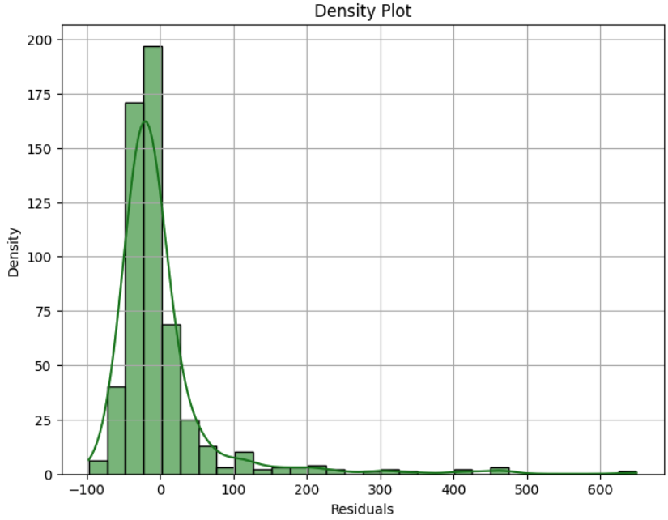

CS4641 Project Midterm: Flight Delay Predictor
Introduction/Background
There exist sites, like wingman.wtf and knowdelay.com that predict flight delays but are often too inaccurate to fully rely on. Scholarly articles that detail the use of ML in predicting flight delays generally focus on a single airport or airline, and use regression models like decision trees [1].
Problem Definition
Airline delays are a frustration for passengers, and because of the few resources available to accurately forecast potential delays, through this project, we aim to help travelers determine when delays are most likely to occur, and airports and airlines provide more reliable information about their operations.
Methods
Data Preprocessing Methods
- Data cleaning was used to remove data points with blank entries for any attribute to ensure that we can use the entire data set as either training or testing data for any models implemented. The dropna function from the pandas library was used to do this.
- Feature transformation was used to scale the datetime data to two different ranges. The first scales the date (less the year) to a point on the unit circle with radius 1. The other maps the date to a value between 0 and 1, where closer to 0 is closer to the middle of winter and closer to 1 is closer to the middle of summer. Each airline's code was also mapped to a distinct number between 0 and 1.
- Dimensionality reduction was used to reduce the dataset to just a few essential attributes: to prevent overfitting while still considering the impact of eliminating features on the accuracy of our model [2]. We removed such attributes as origin city, amount of snow, and taxi out time. Overall we were left with the following columns: FL_DATE, AIRLINE_CODE, DEP_TIME, AIR_TIME, DISTANCE, DELAY, DEST_LAT, DEST_LNG, ORIGIN_LAT, ORIGIN_LNG, ARR_PRECIPITATION, ARR_SNOW_DEPTH. The reduced dataset makes it easier to determine which categories may hold a statistical relationship, though not all would be used in the same model (most likely) to prevent overrfitting.
Implemented model
- Linear regression was implemented to attempt to predict the delay of a flight given information from the attributes above. Two trials were run: one with all 11 features present, and the other with just 7. The 7 most important feature were selected by performing forward feature selection on the training data. The regression model was then fit to each of the two sets of training data, then used to predict delays for the remaining 20% of the data (test set). The initial 80% of the data was the training set. Scikit-learn was the library used for this implementation.
Results and Discussion
Analysis of Regression Model
- For a linear regression model, mean-squared error (MSE) will effectively measure our accuracy while incentivizing few large errors (i.e. predicting no delay when in fact a 24-hour delay occurred).
- The mean square error (MSE) of the model run with all 11 features was 5333.013819648823, while the coefficient of determination (\(R^2\)) was 0.020891585241412658. The MSE of the model with 7 features was 5369.736086878915, while the \(R^2\) was 0.014149603677156453, indicating that 11 features is a better fit. However, all of these error values are very high, indicating that linear regression is likely not a good model to use for predicting flight delays.
- The following chart shows the actual vs predicted flight delays resulting from our model. While many of the delays are nearly accurate, there are also a significant proportion of outliers and points lying off the y=x line (100% accurate).
Project Goals
Create a regression model that accurately predicts length of flight delays -> ex. Adjusted R2 > ~0.9 (dependent on MSE)
Create an accurate classification model that predicts existence of flight delays -> ex. F1 score > ~ 0.75

This chart shows the residuals (target value minus predicted value) for each predicted value. We can observe that the model consistently overestimates the predicted value, and this overestimation becomes greater as the predicted value increases (in a linear fashion). The units for the plot are minutes.

The final chart shows a histogram of all residual values. The plot is denser just to the left of zero, therefore the residual value is less than 0 most of the time, again indicating overestimation of delay time. The units for the plot are minutes.

In future analysis we may also consider the mean absolute deviation (MAD) to give all errors linear weighting, as opposed to MSE which weighs the errors by their square. In the flight delay application we need to balance having most of the predicted delays being accurate (MAD) with minimizing outliers (MSE). The units for the plot are minutes.
Next Steps
- Since our approach of directly predicting the length of flight delay did not yield promising results, we plan to now implement a clustering model that will instead predict the approximate length of a flight delay by placing flights into buckets (i.e. 0-30 minutes, 30-60 minutes, etc.). Currently we plan on using DBScan, as it is effective at eliminating noisy variables, which likely hurt the effectiveness of our regression model. By using DBScan, we hope to be able to filter out less useful data and identify outliers in our data that will produce a more accurate model than the linear regression, while still providing useful information to users, as the exact length of a flight delay is much less important to fliers than the relative length.
References
[1] H. Khaksar and A. Sheikholeslami, “Airline delay prediction by machine learning algorithms,” Scientia Iranica, vol. 0, no. 0, pp. 0–0, Dec. 2017. doi:10.24200/sci.2017.20020
[2] H. S. Obaid, S. A. Dheyab and S. S. Sabry, "The Impact of Data Pre-Processing Techniques and Dimensionality Reduction on the Accuracy of Machine Learning," 2019 9th Annual Information Technology, Electromechanical Engineering and Microelectronics Conference (IEMECON), Jaipur, India, 2019, pp. 279-283, doi: 10.1109/IEMECONX.2019.8877011.
Gantt Chart
Linked Here
Team Contribution Table
| Name |
Proposal Contributions |
| Addy Yang |
Data preprocessing, initial implementation of linear regression |
| Rohan Bhagat |
Adjustments to linear regression, report |
| Dhruv Shrivastava |
Adjustments to linear regression, analysis |
| Aidan Pratt |
Adjustments to linear regression, analysis |
| Teddy Feldman |
Data preprocessing, report |
CS4641 Project Proposal: Flight Delay Predictor
Introduction/Background
There exist sites, like wingman.wtf and knowdelay.com that predict flight delays but are often too inaccurate to fully rely on. Scholarly articles that detail the use of ML in predicting flight delays generally focus on a single airport or airline, and use regression models like decision trees [1].
Problem Definition
Airline delays are a frustration for passengers, and because of the few resources available to accurately forecast potential delays, through this project, we aim to help travelers determine when delays are most likely to occur, and airports and airlines provide more reliable information about their operations.
Methods
Data Preprocessing Methods
- Data cleaning will ensure that our data is free of outliers or incorrect/null data. We'll use the Pandas library, including dropna() and drop_duplicates(), to do this effectively.
- We will use feature transformation to adjust data to best fit the strengths, weaknesses, and biases of our model/dataset. For example, we may use the log transformation technique from scikit-learn to normalize right-skewed data.
- We will use dimensionality reduction to prevent overfitting while still considering the impact of eliminating features on the accuracy of our model [2].
ML Algorithms/Models (supervised only)
- Gradient-boosted decision trees are an effective model for flight delay predictors, and are suitable for our project because of their ability to accurately which features contribute most to flight delays [3]
- In a second approach, we plan to use hierarchical clustering to determine the ideal size and number of intervals to accurately predict delays (e.g. 0-10 min delay, or 0-30 min delay?)
- Finally, for our binary classification approach, we plan to use support vector machines to best divide flights where a delay will and will not likely occur.
Potential Results and Discussion
3+ Quantitative Metrics
- For a linear regression model, mean-squared error (MSE) will effectively measure our accuracy while incentivizing few large errors (i.e. predicting no delay when in fact a 24-hour delay occurred).
- We will also consider mean absolute deviation (MAD). However, we will prioritize minimizing MSE, which is more punitive of exceptionally large residuals than MAD, thereby creating more helpful predictions.
- For our clustering and classification approaches, we will consider Rand Score and F1 score to evaluate accuracy.
Project Goals
Create a regression model that accurately predicts length of flight delays -> ex. Adjusted R2 > ~0.9 (dependent on MSE)
Create an accurate classification model that predicts existence of flight delays -> ex. F1 score > ~ 0.75
Expected Results
- Identify the biggest reasons for flight delays across our datasets.
- Predict flight delays with accuracy that will help travelers.
- Determine whether length or existence of a delay is easier to accurately predict.
References
[1] H. Khaksar and A. Sheikholeslami, “Airline delay prediction by machine learning algorithms,” Scientia Iranica, vol. 0, no. 0, pp. 0–0, Dec. 2017. doi:10.24200/sci.2017.20020
[2] H. S. Obaid, S. A. Dheyab and S. S. Sabry, "The Impact of Data Pre-Processing Techniques and Dimensionality Reduction on the Accuracy of Machine Learning," 2019 9th Annual Information Technology, Electromechanical Engineering and Microelectronics Conference (IEMECON), Jaipur, India, 2019, pp. 279-283, doi: 10.1109/IEMECONX.2019.8877011.
[3] S. Manna, S. Biswas, R. Kundu, S. Rakshit, P. Gupta and S. Barman, "A statistical approach to predict flight delay using gradient boosted decision tree," 2017 International Conference on Computational Intelligence in Data Science(ICCIDS), Chennai, India, 2017, pp. 1-5, doi: 10.1109/ICCIDS.2017.8272656.
Gantt Chart
Linked Here
Team Contribution Table
| Name |
Proposal Contributions |
| Addy Yang |
Report sections 1, 3, and 5, creating Github.io page, Gantt chart |
| Rohan Bhagat |
Report sections 1-4, Video Presentation |
| Dhruv Shrivastava |
Created Google Slides Presentation, Report Section 4 |
| Aidan Pratt |
Project Idea, Video Presentation, Google Slides |
| Teddy Feldman |
Report Sections 1-5 |